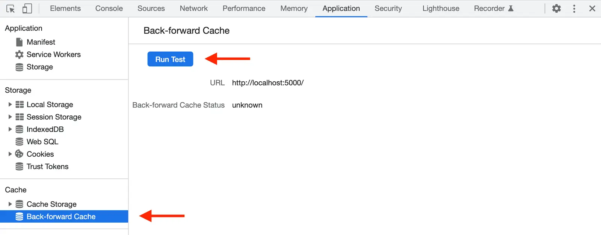

Short answer
The back-forward cache restores a page the visitor already saw, instead of loading it from scratch.
DevTools can say the page was restored or why it was not. Unload handlers, certain cache-control values, and some connection types are typical reasons a page is ineligible. SEO Health notes those blockers on a template because a full reload on every Back click repeats the cost of the first load. The panel screenshot is a tool illustration, not a result for this site.
Definition
This cache is a browser behavior for history navigation. It is not an HTTP cache entry you set with a long max-age, and it is not a CDN. Confusing the three leads to the wrong header change. The audit names which mechanism failed.
What rendering changes for a crawler
Check a sample URL in the back-forward panel and remove unload handlers or headers that only exist by habit.
A page that must never be restored, such as a one-time payment confirmation, can opt out on purpose. A product page usually should not opt out. The note should say which case the template is. Eligibility does not index the page and does not rank it.

What to check
- Unload handlers on templates that should restore
- Cache-control values that block restoration by accident
- Payment or other pages that opt out on purpose
- One product URL checked in the panel
- The mechanism not confused with HTTP cache or a CDN
A practical example
Every template registers an unload handler left over from an old analytics snippet. The back-forward panel says the product URL is ineligible. Removing the handler makes the product page eligible. The payment confirmation keeps its own opt-out. No score is attached.
What this does not claim
Back-forward eligibility does not guarantee rankings or citations.
Where Mika Visibility files this
Mika Visibility treats rendering as an SEO Health question: can the important HTML be fetched and compared with and without JavaScript when the template depends on it. That comparison is not a GEO audit and not a market-coverage plan. Findings stay attached to sample URLs. A re-audit after the template change is how the team checks the repair.
The panel figure shows eligibility, which is a yes-or-no about restoration, not a points total.
FAQ
What does the back-forward cache restore?
The back-forward cache restores a page the visitor already saw, instead of loading it from scratch.
What should a sample check look for?
Check a sample URL in the back-forward panel and remove unload handlers or headers that only exist by habit.
Does eligibility guarantee rankings?
Back-forward eligibility does not guarantee rankings or citations.
Next step
Run a structured SEO + GEO audit to see health findings, growth gaps, and a blueprint you can act on.
Clearer entities, answers, evidence, and context make pages easier to understand and reference. Results in any answer product are not guaranteed.